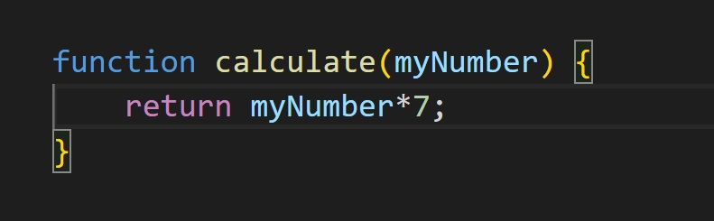
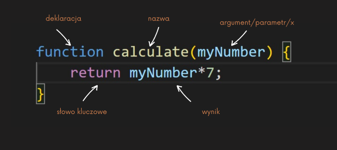
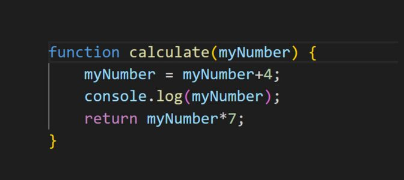

Funkcje w JavaScript
Na początku nauki JavaScript-u (JS-a), korzystaliśmy już podstawowych funckji typu 'alert' lub 'console.log'.
Teraz przyszedł czas na zajęcie się funkcjami z krwi i kości.
Podstawowa funckja w JS wygląda tak:

- Na wejściu dostaje dane - argumenty. ( camelCase)
- Dla podanego argumentu podaje jakąś wartość.
- Posiada określony wzór.

Return:definiuje nam wynik funkcji. Może występować w funckji, ale nie musi. Jak go nie zdefiniujemy to funkcja zwróci nam - undefined.
Ciało funkcji. Fukcja JS posiada nawiasy klamrowe, które wyznaczją ciało funkcji.
W ciele funckji może być zawarte wiele rzeczy/składników, które określają nam jej działanie. Np: W pierwszej linii w ciele f-kcji modyfikujemy nasz argument i przypisujemy mu nową wartość. W kolejnej linii wypisujemy nową wartość, a w ostatniej linii definiujemy wynik działania funckji.
Aby konsola wypisała nam jakiś wynik działania musimy wprowadzić argument np warotść '1'. Robimy to za pomocą naszej zadeklarowanej funckji calculate i w nawiasie wpisujemy 1. W tym momencie na konsoli otrzymamy wynik 5, ponieważ nasza funkcja wpierw modyfikuje naszą wartość o +4,a następnie poprzez polecenie console.log(myNumber) nasza wartość jest wypisywana na konsoli. Aby otrzymać wynik działania naszej funckji musimy wykonać jedno z tych działań: - zadeklarować zmienną np. "result", pod którą będziemy otrzymywać wynik i przypisać ją do funckji calculate(1),[const result = calculate(1),] a następnie wypisać polecenie console.log(result). W tym momencie konsola wypisze nam najpierw naszą wprowadzoną wartość zmodyfikowaną o +4( ponieważ zadziała znowu console.log znajdujący się w ciele funckji), a nastpęnie otrzymamy wynik działania funcji, w naszym przypadku dla wartości 1 będzie to 35. - drugi sposób pomija deklarowanie zmiennej "result" i wypisując console.log(calculate(1)); otrzymamy wynik działania funckji dla wartości'1'.Funkcja w JS:
Deklarujemy nazwę funckji ( nie zawsze). W środku dokonujemy obliczeń/wykonujemy zadania. Funkcja przyjmuje argumenty(ale nie musi). Funkcja zawsze zwraca coś( nawet jeśli nie mamy return - wtedy funkcja zwraca - undefined).function hello() { console.log('hello') console.log('hello') } hello(); >>> hello hello console.log(hello()) >>> undefined.
Po co funkcje?